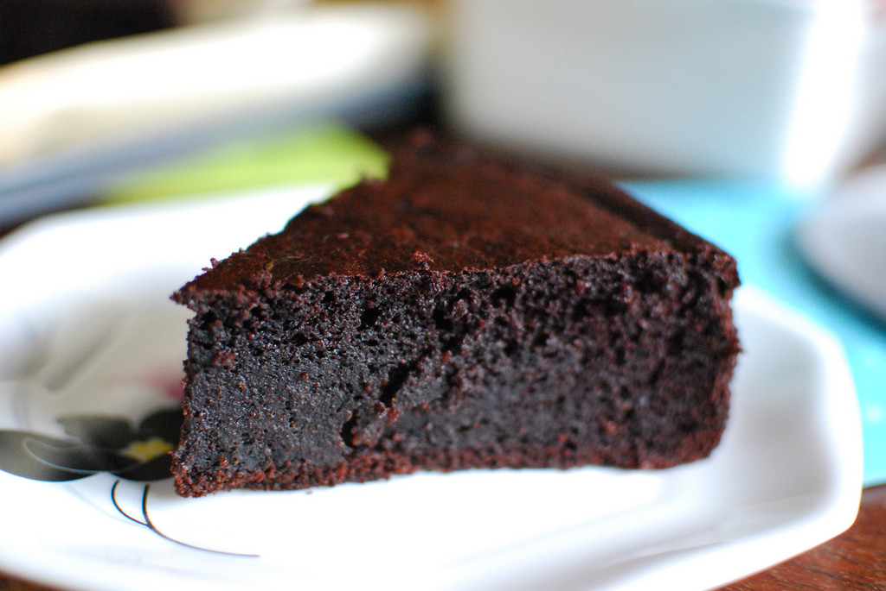

Brownies

A DELICIOUS HOMEMADE CHOCOLATE BROWNIE RECIPE! It’s brownie time! Make these sweet and delicious homemade chocolate brownies for dessert tonight.
Your future self will thank you!
Ingredients
Ingredients below are for a 5.5-cup cooker. Double the ingredients for a 10-cup cooker.
- 50g All-purpose flour or pancake flour
- 40g Pure cocoa powder
- 5g Baking powder
- 50g Sugar
- Large egg, whisked
- 1 cup Milk or unsweetened oat milk
- Cooking spray
Directions
- Sift the flour, cocoa powder, and baking powder in a mixing bowl.
- Add the sugar and stir.
- Add the egg and milk and stir until the batter is smooth.
- Spray the rice cooker inner pot with cooking spray and pour the batter in.
- Select the [Slow Cook] function and set the timer to 40 minutes. Press start.